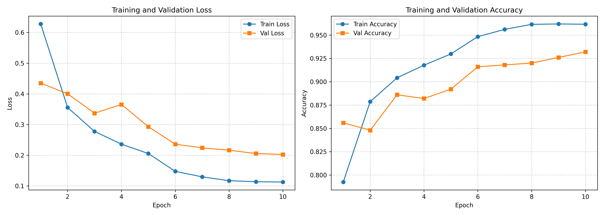
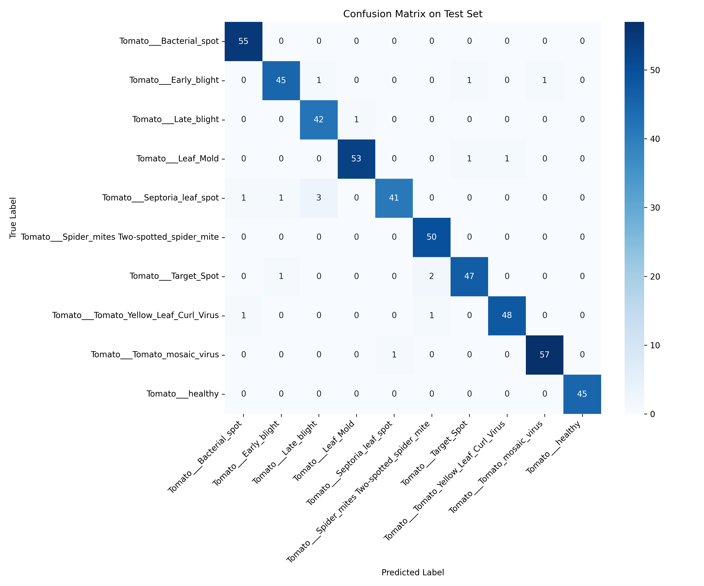
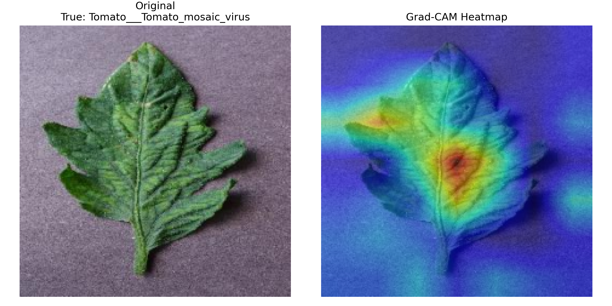

AI Foundation (A) / Topic 401
Tomato Disease Recognition
番茄病害识别
检测系统
基于 CNN 与迁移学习的 10 类番茄叶片病害自动分类，从数据预处理、训练评估到 Web Demo 的完整计算机视觉工程闭环。
96.6%
Top-1 Accuracy
10
Tomato Classes
6
Experiments
Top-3
Gradio Output
Requirement Alignment02
What must be proven
不是“跑出结果”，而是证明流程可信
课程验收点被转化为可检查证据：源码负责可复现，实验结果负责可量化，PPT 与演示负责可展示。
完整训练脚本：Dataset / DataLoader / 模型 / 训练循环 / 验证评估
测试集 Top-1 Accuracy ≥ 90%，最佳模型达到 96.6%
From Scratch、fc_only、fc_then_layer4 三类冻结策略对比
Loss/Accuracy、混淆矩阵、分类报告、Grad-CAM、Gradio Demo
Data / Preprocessing03
PlantVillage Tomato
数据集保持清晰，预处理保持一致
10000
Train Images
500
Validation
500
Test
训练阶段：Resize 224×224、随机水平翻转、±15° 随机旋转
验证/测试阶段：仅确定性预处理，避免评估扰动
固定随机种子，保存类别顺序，避免标签错位
Transform Pipeline
Resize → Augment → Normalize → DataLoader
CNN Shape04
Architecture logic
CNN 把叶片纹理逐层抽象为病害类别
01 INPUT[B,3,224,224]
02 CONV[B,64,112,112]
03 POOL[B,64,56,56]
04 BLOCKS[B,512,7,7]
05 LINEAR[B,10]
Conv2D 提取斑点、边缘和颜色纹理；MaxPool 降低空间分辨率；Linear 输出 10 类概率，满足报告对 Tensor Shape 变换的说明要求。
Transfer Learning05
Freezing strategy
冻结不是装饰项，而是迁移学习是否成立的核心证据。
仅训练分类头不足以适配病害细粒度差异；解冻尾部特征层后，模型显著超过 fc_only。
From Scratch：全模型训练，测试准确率 93.0%
fc_only：冻结全部 backbone，仅训练分类头，测试准确率 89.0%
fc_then_layer4：冻结前面 N 层，微调分类头和尾部特征层，最高 96.6%
Engineering Structure06
PyTorch project style
训练、评估、部署被拆成可解释模块
config.py
实验配置 / seed
data.py
Transform / DataLoader
models.py
Backbone / Freeze
trainer.py
训练循环 / best model
evaluator.py
报告 / 混淆矩阵
gradcam.py
可解释性热力图
train.py
训练入口
app.py
Gradio Web Demo
Experiment Matrix07
Six experiments
MobileNetV3 在准确率、参数量和速度之间最均衡
实验
骨干
冻结策略
Acc
参数
MobileNetV3
small
fc_then_layer4
96.6%
1.53M
ResNet50
resnet50
fc_then_layer4
96.2%
23.53M
ResNet18 low LR
resnet18
fc_then_layer4
95.8%
11.18M
ResNet18
resnet18
fc_then_layer4
95.4%
11.18M
Scratch
resnet18
none
93.0%
11.18M
fc_only
resnet18
fc_only
89.0%
11.18M
MobileNetV396.6%
ResNet5096.2%
ResNet18 low LR95.8%
Scratch93.0%
fc_only89.0%
Training Diagnostics08
Evidence, not decoration
训练曲线和混淆矩阵共同支撑 96.6%


测试集中主要误差集中在纹理相近类别；整体 Macro-F1 约 96.5%，健康叶片类别 F1 达到 1.00。
Explainability / Demo09
Grad-CAM + Gradio
模型不仅给出答案，也能展示关注区域
Grad-CAM 热力图验证模型关注叶片病害区域
Gradio 支持上传叶片图，实时返回 Top-3 类别与置信度
演示复用同一 checkpoint、类别映射和图像预处理

Takeaway10
Defense close
答辩时只抓一条主线：完整、可信、可展示
达成
Top-1 ≥ 90%
完整
Train / Eval / Demo
清晰
Modular PyTorch
加分
3 Backbones + Gradio
该系统完成了番茄叶片病害识别从数据、模型、训练、评估到交互部署的完整计算机视觉工程闭环。